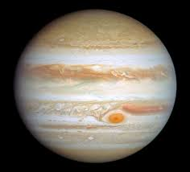

1. Юпітер

Юпітер — найбільша планета Сонячної системи, справжній газовий гігант. Його маса більша за масу всіх інших планет разом узятих приблизно в 2,5 раза.
Цікаві факти про Юпітер:
- На Юпітері бушує Величезна червона пляма — гігантський шторм-антициклон, який триває вже понад 300 років і є більшим за всю Землю.
- У Юпітера понад 95 офіційно підтверджених супутників; найбільший із них — Ганімед, який перевершує за розміром планету Меркурій.
- Планета має найпотужніше магнітне поле серед усіх планет Сонячної системи, що утворює величезні полярні сяйва.
2. Сатурн

Сатурн — шоста планета від Сонця, знаменита своєю приголомшливою системою кілець, що складаються з мільярдів льодяних брил і каменів.
Цікаві факти про Сатурн:
- Сатурн має найменшу густину серед усіх планет: якщо уявити достатньо великий океан, Сатурн міг би плавати в ньому, як м'яч.
- Кільця Сатурна неймовірно широкі (тисячі кілометрів), але водночас дуже тонкі — їхня товщина в середньому становить лише близько 10 метрів.
- Його найбільший супутник, Титан, має щільну атмосферу та річки з рідких вуглеводнів (метану й етану).
3. Уран

Уран — сьома планета від Сонця і перший крижаний гігант, відкритий за допомогою телескопа. Атмосфера планети містить метан, який надає їй характерного блакитно-зеленого кольору.
Цікаві факти про Уран:
- Уран обертається навколо Сонця ніби «лежачи на боці» (нахил його осі становить майже 98 градусів), через що тривалість пір року на ньому триває понад 40 земних років.
- Це найхолодніша планета Сонячної системи — температура в його верхніх шарах атмосфери може опускатися до -224 °C.